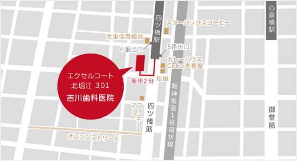

- ホーム
- 医院概要、アクセス、治療の流れ
吉川歯科医院の医院概要
大阪四ツ橋駅から徒歩2分の吉川歯科医院の医院概要・診療時間・アクセス方法と初診診療の流れのほか、提携医院である吉川歯科港区診療所をご紹介いたします。
医院概要・診療時間・アクセス方法
医院概要
| 医院名 | 吉川歯科医院 |
|---|---|
| 住所 | 〒550-0014 大阪府大阪市西区北堀江1-3-10 エクセルコート北堀江 301 |
| TEL | 06-6531-6128 |
| FAX | 06-6531-6128 |
| 最寄り駅 | 地下鉄四ツ橋線四ツ橋駅5番または6番出口すぐ |
| 地図 |
地下鉄四つ橋線 四ツ橋駅からのアクセス

地下鉄四つ橋線 四つ橋駅もしくは地下鉄長堀鶴見緑地線 心斎橋駅の5･6番改札を出て、5番出口から出て徒歩2分です。
診療時間
| 吉川歯科診療所の診療時間 | |||||||
|---|---|---|---|---|---|---|---|
| 月 | 火 | 水 | 木 | 金 | 土 | 日 | |
| 9：00〜13：00 | ◯ | ◯ | ◯ | × | ◯ | ◯ | × |
| 14：00〜17：30 | ◯ | ◯ | ◯ | × | ◯ | ◯ | × |
初診の流れ
吉川歯科医院での一般的な初診の流れをご説明いたします。当院では、カウンセリングや検査を踏まえて、患者様お一人おひとりに最適な治療をおこなっております
- 【1】カウンセリング
- 患者様が気になっているお口の症状や希望されている治療法についてお聞きします。1日5名に限定して診療をおこなっているため、時間はたっぷりあります。
- 【2】口腔内の検査
- レントゲン撮影や口腔内撮影、歯科用CTなどを活用して患者様のお口の中を調べます。また、歯や顎・咬み合わせについてコンピュータで分析し治療に応用しております。
- 【3】治療計画の立案
- 検査結果をもとに、患者様にあった治療方針を立てさせていただきます。当院の女性スタッフが対応いたしますので、説明途中で気になることや疑問に思うことがあればお気軽にご相談ください。
- 【4】治療
- 治療方針をもとにして治療を進めます。1回の治療に時間をかけることができるため、通院回数を減らすことができます。マイクロスコープやセレック・歯科用CTなど最新設備を必要に応じて活用して治療をおこないます。
- 【5】カウンセリング
- 治療が終了してもそれで終わりではありません。治療した後のお口全体の健康的な状態を維持するためにも治療後でも定期的に来院していただきます。必要に応じて検査やカウンセリングを受けていただきます。その際には遠慮なく気になったことをお話しください。